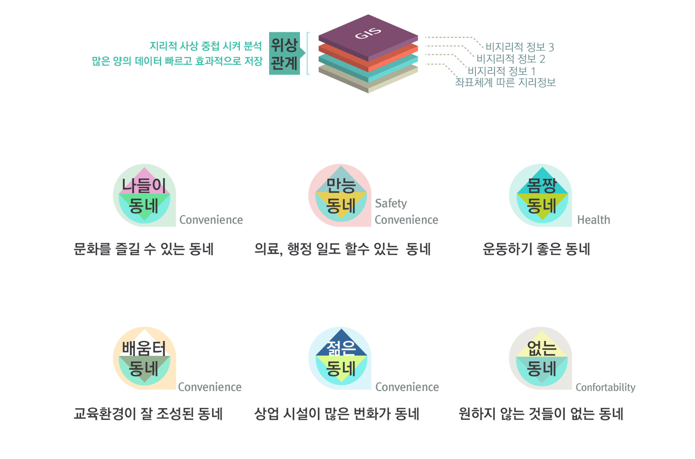

동네탐험
데이터기반 주거공간 추천 기획, GIS 활용한 시민용 주거맵 제작, 안드로이드 앱 개발, 통계청 1등, 정부 3.0 대통령상 수상
문헌 조사
이사 계획 이유
이사 계획 이유로는 경제적 여건 외에도교육 환경, 자연 환경, 직장, 재태그, 치안문제, 교통편의, 문화/생활편의시설 등으로 다양하다.
주거환경의 질적 목표
또, 세계 보건 기구 WHO가 정의한 '건강한 주거환경의 기초'에 따르면,도시 주거환경을 바람직하게 유지하기 위해 추구해야할 질적 목표로 안정성, 건강성, 편리성, 쾌적성을 우선적으로 고려해야한다.기존의 국가적 차원에서의 GIS 활용 시 문제점 | 사용자 조사 진행
In-depth Interview로 GIS 서비스는 광역적인 도시재생 사업에만 집중하거나, 시민 개별적인 공간 의사결정에는 활용할 수 없는 한계점을 도출했다.
"국가적 차원의 도시계획은 잘 와닿지 않아"나라에서 도시 재생사업, 개발 우선순위를 결정하는 일을 한다는 건 알고 있지.하지만 언제까지 기다려야해? 내가 살 곳이 당장 좋아지길 기다는는 건 말도안되.
"나의 의견을 반영한 주거지의 결정도 엄청 중요해"내가 이사를 계획하거나 살 곳을 선정할 때는 특별히 중요하게 생각하는 부분이 있어. 상대적으로 나에게 더 중요하거나 시설 활용도에 따라 ‘나에게’ 살기 좋은 동네를 찾고 싶어.그런데 어디에서 무엇을 누릴 수 있는지를 잘 알지 못한다구.
개개인의 적합한 주거공간 탐색을 위한 해결책
질적 목표와 기호에 따라 거주지 탐색을 할 수 있도록 동네 테마 별 지역 추천
시나리오
탐색할 지역 17개 중 선택 > 원하는 동네 테마 중복 선택 > 원하는 이웃 (인구통계) 조절 > 1차 시각화 > 주택 정보 선택 > 살기좋은 동네 추천
| Town | User Value |
|---|---|
| 나들이 동네 | 놀거리가 많고, 문화생활을 주변에서 즐길 수 있는 주거지 선호 |
| 만능 동네 | 여가나 소비는 물론, 의료, 행정일을 쉽게 할 수 있는 주거지 선호 |
| 몸짱 동네 | 운동하거나 산책하기 좋은 주거지 선호 |
| 배움터 동네 | 공부하기 좋은, 자녀가 교육받기 쉬운 주거지 선호 |
| 젊은 동네 | 다양한 먹거리와 쇼핑몰이 있고 번잡한 주거지 선호 |
| 없는 동네 | 시끄럽거나 복잡한 동네보다는, 번화가가 멀고, 조용한 주거지 선호 |
데이터셋 매쉬업 및 분류 [Step 1.2.3.]
Open API
국가통계포털 | 통계지리정보서비스 | 공공데이터포털 | 문화체육관광부
- MapControl API
- 경계 API : 집계구, 행정구역 관련 경계 API
- 통계 API : 행정구역 코드 검색, 통계항목검색 통계, 집계구 단위 통계, 행정구역 단위 통계 외 관련 API
- 주소/기타 API : 좌표변한 API 등
Step 1. 주거가치 선택
사용자 조사와 문헌을 바탕으로 주거 가치를 선정 후 원하는 동네 테마 6가지를 기획, 이를 충족시키는 데이터를 매쉬업
| Town | Data |
|---|---|
| 나들이 동네 | 박물관 및 사적지, 문예회관, 미술관, 동물원 및 식물원, 종합운동장, 수영장, 스케이트장, 골프연습장 |
| 만능 동네 | 커미숍 및 주스전문점, 슈퍼마켓, 체인화 편의점, 시청 및 우체국, 지방문화원, 문예회관, 경찰서 |
| 몸짱 동네 | 등산로, 체육 공원 및 도시공원, 스포츠 시설, 생활 체육관 |
| 배움터 동네 | 초중학교, 고등학교, 전문대 및 대학교, 일반교과학원, 외국어학원, 예체능학원, 컴퓨터학원, 도서관, 독서실 |
| 젊은 동네 | 대형 종합 소매업, 백화점, 예술회관 및 영화관, 주점 및 호프집 |
| 없는 동네 | 주점 제외, 호프집 제외, 대학가 제외, 학원가 제외, 백화점 제외, 대형 종합 소매업 제외 |
Step 2. 주거지 인구통계학적정보 조절
이웃의 인구통계학적 정보, 외국인 비율, 인구밀도
| Neighborhood | Data |
|---|---|
| 연령대 | 4세 미만 / 10대 / 20대 / 30대 / 40대 / 50대 / 60대 / 70대 / 80대 이상 : 총 18개 > 9개 범주로 그룹핑 |
| 성비 | 혼인상태와 연령대는 무시하고, 남녀 비율로만 그룹핑 |
| 학력수준 | 미취학 / 초등학교 / 중학교 / 대학교(전문대, 대학교 그룹핑) / 석사 / 박사 : 총 6개 범주로 그룹핑 |
| 외국인비율 | 외국인 등록인 수로 활용 |
| 인구밀도 | 인구밀도 사용 |
Step 3. 주택 정보 다중선택
원하는 주택 유형, 건축년도, 평수
| Neighborhood | Data |
|---|---|
| 주택 유형 | 다세대 / 단독주택 / 아파트 / 연립주택 / 영업용 건물 내 주택 : 집계구 별 합계 개수 |
| 건축년도 | 1960년 ~ 1999년 사이 / 2000년 ~ 20009년 사이 / 2010년도 이후: 총 3가지로 범주화 |
| 주택 면적 | 6평 이하 / 6평~12평 / 12평~18평 / 18평~25평 / 25평~30평 / 30평~39평 / 39평~49평 / 49평~69평 / 69평 초과
: 제곱미터를 사용자 인지 쉽도록 평수로 바꿔 계산 |
내가 살고 싶은 동네 : 추천 계산 방식
분석 단위 : 광역시 17개 중 1개 시도 내, 집계구 단위(=통)로 분석 결과 도출, 서울은 16,470 집계구로 이루어짐
- [1] 집계구 중심으로 2km 이내의 시설물 갯수 계산
- [2] 집계구 중심으로 시설물과의 최소 거리 계산
- [3] 정규화
- [4] 집계구별로 합산하여 내림차순으로 순위 정리
Main Structure
GIS, 지도 기반 시각화를 통해, 조건에 부합한 다양한 동네를 탐색하고 개인하게 맞는 최적화된 돈네를 추천받을 수 있다.
Key wireframe
거주지역 의사결정 맵
실제 지도 위에 사용자가 쉽게 정보를 받아들일 수 있도록 시각화함

Mobile App